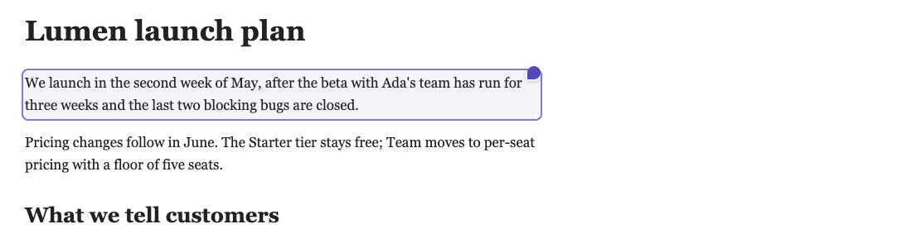
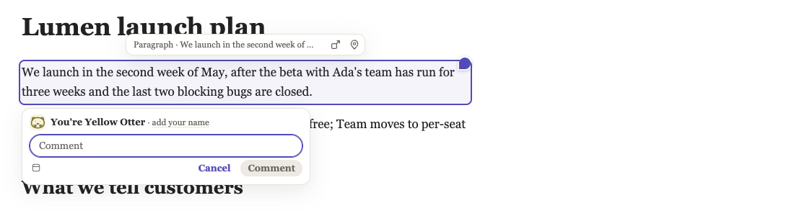
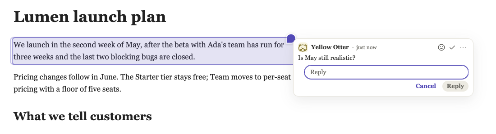
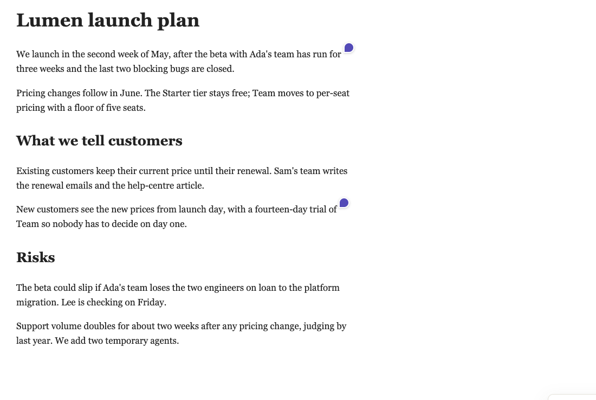
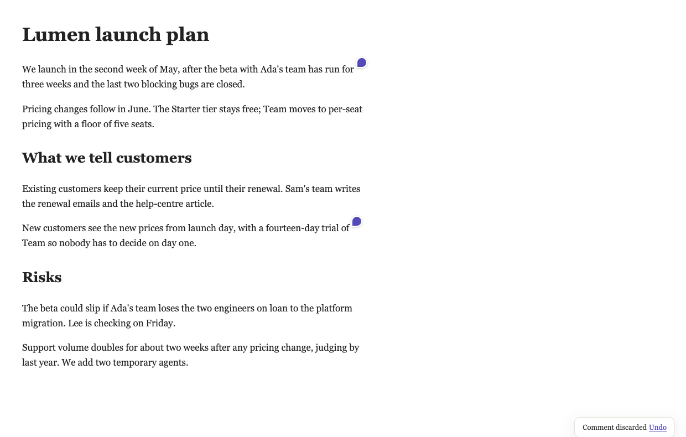
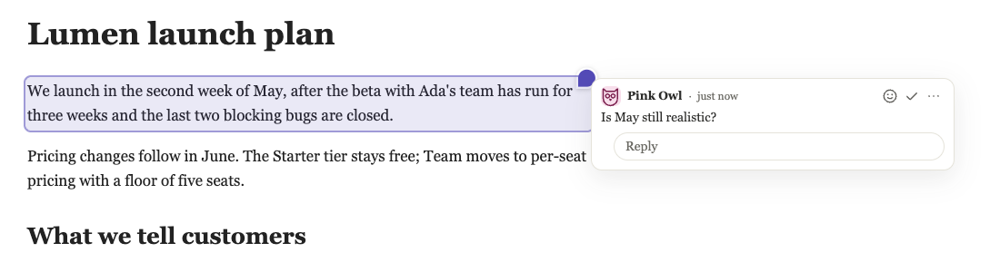
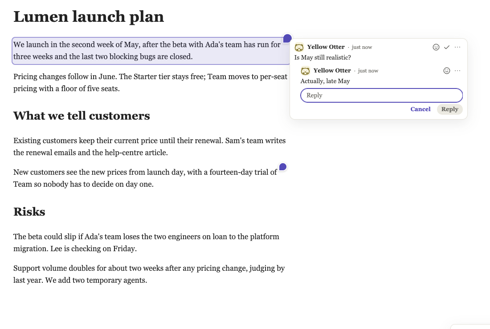
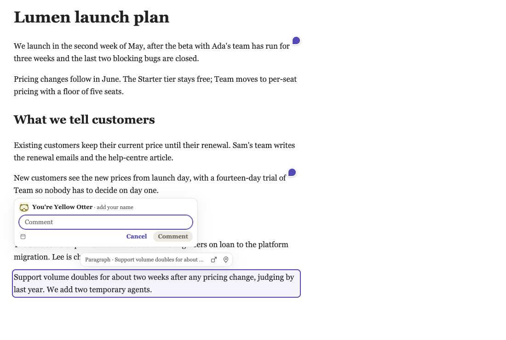

<title>Newcomer's third pass</title>
<meta name="claude:viewport-fit-sides" content="cover">
<link rel="stylesheet" href="https://fonts.googleapis.com/css2?family=Inter:wght@400;500;600&family=Source+Serif+4:ital,wght@0,400;0,600;1,400&display=swap">
<style>
  /* Layout: one column of findings, each a before (the real screen) beside an after (drawn). Light look only. */
  :root {
    --bg: #fbfaf7; --ink: #1d1b2e; --muted: #5d5a6c; --faint: #8b889a; --line: #e4e2ea;
    --accent: #5b4fcf; --accent-soft: #ecebfb; --card: #ffffff; --warn: #a14b1d; --warn-soft: #fbeee6;
    --display: "Source Serif 4", Georgia, serif; --text: Inter, system-ui, -apple-system, "Segoe UI", sans-serif;
    --ui: -apple-system, "Segoe UI", Inter, system-ui, sans-serif;
  }
  body { background: var(--bg); color: var(--ink); font: 15px/1.55 var(--text); margin: 0;
    padding-block: 40px 80px; padding-left: max(16px, env(safe-area-inset-left, 0px)); padding-right: max(16px, env(safe-area-inset-right, 0px)); }
  main { max-width: 980px; margin: 0 auto; display: grid; gap: 56px; }
  h1 { font: 600 34px/1.15 var(--display); margin: 0 0 10px; text-wrap: balance; letter-spacing: -0.01em; }
  h2 { font: 600 22px/1.25 var(--display); margin: 0 0 6px; text-wrap: balance; }
  h3 { font: 600 15px/1.3 var(--text); margin: 0 0 8px; }
  p { max-width: 66ch; margin: 0 0 10px; }
  .lede { color: var(--muted); font-size: 16px; }
  .eyebrow { font: 500 12px/1 var(--text); letter-spacing: 0.08em; text-transform: uppercase; color: var(--faint); margin-bottom: 10px; }
  .strip { display: grid; grid-template-columns: repeat(5, minmax(0, 1fr)); gap: 12px; }
  .strip figure { margin: 0; min-width: 0; }
  .strip img { width: 100%; border: 1px solid var(--line); border-radius: 8px; background: #fff; display: block; }
  .strip figcaption { font-size: 12.5px; color: var(--muted); margin-top: 6px; line-height: 1.35; }
  .strip figcaption b { color: var(--ink); font-weight: 600; }
  .finding { display: grid; gap: 14px; }
  .pair { display: grid; grid-template-columns: repeat(auto-fit, minmax(300px, 1fr)); gap: 18px; align-items: start; }
  .pair > div { min-width: 0; }
  .pair img { width: 100%; border: 1px solid var(--line); border-radius: 8px; display: block; background: #fff; }
  .label { font-size: 12.5px; color: var(--faint); margin-bottom: 6px; }
  .why { color: var(--muted); }
  .count { display: inline-block; font-size: 12.5px; color: var(--muted); background: var(--accent-soft); border-radius: 999px; padding: 2px 10px; margin-left: 6px; }
  /* Drawn screens */
  .menu { width: 340px; max-width: 100%; background: #fff; border: 1px solid var(--line); border-radius: 10px; font-family: var(--ui); font-size: 14px; box-shadow: 0 8px 28px rgba(40,30,90,.08); overflow: hidden; }
  .menu .head { display: flex; gap: 10px; align-items: center; padding: 12px 14px; border-bottom: 1px solid var(--line); }
  .menu .head b { display: block; font-size: 14px; }
  .menu .head span { font-size: 12.5px; color: var(--muted); }
  .menu .icon { width: 22px; height: 22px; border-radius: 50%; border: 2.5px solid var(--accent); box-sizing: border-box; }
  .menu .big { margin: 14px; padding: 10px; background: var(--accent); color: #fff; text-align: center; border-radius: 8px; font-weight: 600; }
  .menu .note { margin: 0 14px 16px; color: var(--muted); font-size: 13px; line-height: 1.4; }
  .row { display: flex; justify-content: space-between; align-items: center; gap: 10px; padding: 10px 14px; }
  .row small { color: var(--muted); font-size: 12.5px; }
  .row .n { background: var(--accent); color: #fff; border-radius: 999px; min-width: 20px; height: 20px; display: grid; place-items: center; font-size: 12px; }
  .row.sub { padding-left: 32px; }
  .row.open { background: #f3f2f9; }
  .menu hr { border: 0; border-top: 1px solid var(--line); margin: 4px 0; }
  .sw { width: 34px; height: 20px; border-radius: 999px; background: #d9d8e1; position: relative; flex: none; }
  .sw::after { content: ""; position: absolute; top: 2px; left: 2px; width: 16px; height: 16px; border-radius: 50%; background: #fff; }
  .sw.on { background: var(--accent); } .sw.on::after { left: 16px; }
  kbd { font: 12px var(--ui); color: var(--muted); }
  .chev { color: var(--faint); }
  .toast { display: inline-block; background: #fff; border: 1px solid var(--line); border-radius: 8px; padding: 9px 12px; font: 13px/1.45 var(--display); color: var(--ink); box-shadow: 0 6px 18px rgba(40,30,90,.08); max-width: 320px; }
  .box { width: 400px; max-width: 100%; background: #fff; border: 1px solid var(--line); border-radius: 10px; padding: 10px 12px; font-family: var(--display); font-size: 13.5px; box-shadow: 0 8px 28px rgba(40,30,90,.08); }
  .box .who { font-size: 13px; margin-bottom: 8px; } .box .who b { font-weight: 600; } .box .who span { color: var(--muted); }
  .box .field { border: 1.5px solid var(--accent); border-radius: 999px; padding: 7px 12px; color: var(--faint); }
  .box .acts { display: flex; justify-content: flex-end; gap: 14px; margin-top: 8px; font-size: 13px; }
  .box .acts b { color: var(--accent); font-weight: 600; } .box .acts span { background: #eceaf3; color: var(--muted); padding: 2px 10px; border-radius: 999px; }
  .marker { display: inline-block; width: 14px; height: 14px; border-radius: 50% 50% 50% 0; background: var(--accent); transform: rotate(-45deg); margin-right: 8px; vertical-align: -2px; }
  .page { background: #fff; border: 1px solid var(--line); border-radius: 10px; padding: 18px 20px; font-family: var(--display); position: relative; min-height: 150px; }
  .page .para { border: 1.5px solid var(--accent); background: #efedfa; border-radius: 4px; padding: 6px 8px; font-size: 14.5px; line-height: 1.45; position: relative; }
  .page .para .marker { position: absolute; right: -8px; top: -8px; margin: 0; }
  .page .corner { position: absolute; right: 14px; bottom: 14px; }
  .settings { background: #fff; border: 1px solid var(--line); border-radius: 10px; padding: 18px 20px; font-family: var(--ui); font-size: 13.5px; max-width: 520px; }
  .settings h4 { margin: 0 0 4px; font-size: 18px; }
  .settings .s { padding: 10px 0; border-top: 1px solid var(--line); display: flex; justify-content: space-between; gap: 14px; align-items: flex-start; }
  .settings .s small { display: block; color: var(--muted); margin-top: 2px; line-height: 1.4; }
  .settings .h { font-weight: 600; margin-top: 22px; }
  table { border-collapse: collapse; width: 100%; max-width: 640px; font-size: 14px; font-variant-numeric: tabular-nums; }
  th, td { text-align: left; padding: 8px 10px; border-bottom: 1px solid var(--line); vertical-align: top; }
  th { font-weight: 600; color: var(--muted); font-size: 12.5px; letter-spacing: 0.04em; text-transform: uppercase; }
  td.num { text-align: right; }
  .keep { background: var(--card); border: 1px solid var(--line); border-radius: 10px; padding: 16px 20px; }
  .keep ul, .ask ul { margin: 6px 0 0; padding-left: 20px; } li { margin: 4px 0; }
  .ask { background: var(--warn-soft); border-radius: 10px; padding: 16px 20px; color: #4a2a17; }
  .ask h3 { color: var(--warn); }
  .tag { font-size: 12px; color: var(--warn); font-weight: 600; letter-spacing: 0.04em; text-transform: uppercase; }
  code { font: 12.5px ui-monospace, Menlo, monospace; background: #f1f0f6; padding: 1px 5px; border-radius: 4px; }
  @media (max-width: 720px) { .strip { grid-template-columns: repeat(2, minmax(0,1fr)); } }
  .tip { display: inline-block; background: #fff; border: 1px solid var(--line); border-radius: 8px; padding: 8px 10px; font: 13px/1.4 var(--display); box-shadow: 0 6px 18px rgba(40,30,90,.08); }
  .tip b { display: block; font-weight: 600; font-size: 12.5px; }
  .card { background: #fff; border: 1px solid var(--line); border-radius: 10px; padding: 10px 12px; font-family: var(--display); font-size: 13.5px; box-shadow: 0 8px 28px rgba(40,30,90,.08); width: 400px; max-width: 100%; }
  .card .who { display: flex; justify-content: space-between; font-size: 13px; margin-bottom: 4px; } .card .who b { font-weight: 600; } .card .who span { color: var(--muted); } .card .who i { color: var(--faint); font-style: normal; letter-spacing: 3px; }
  .card .quiet { border: 1px solid var(--line); border-radius: 999px; padding: 6px 12px; color: var(--faint); margin-top: 8px; }
  .page .para.plain { border-color: transparent; background: transparent; }
  .page .para.dash { border-style: dashed; background: #fff; }
  .page .pos { position: absolute; }
  .page .pic { width: 180px; height: 110px; border-radius: 6px; background: linear-gradient(135deg, #cfd6ea, #534ab7); }
</style>


<main>
  <header>
    <div class="eyebrow">Pipeup for browsers · after the newcomer build (PR 151) · 24 November 2026</div>
    <h1>The newcomer's first run, third pass: what happens next</h1>
    <p class="lede">The words are now short. This pass looks at the states instead: what a first-timer meets after Return, when they click the paragraph they just commented on, when they click away while reading, and what the screen says meanwhile. Every “now” is a real screen from the build; every “proposed” is drawn. Five changes.</p>
  </header>

  <section>
    <div class="eyebrow">The run, in order (taken from the build)</div>
    <div class="strip">
      <figure><figcaption><b>1 · After Return, the mouse moves.</b> The same paragraph lights up to be commented on again. The comment is a dot.</figcaption></figure>
      <figure><figcaption><b>2 · Click it again.</b> A second empty box. The first comment is nowhere.</figcaption></figure>
      <figure><figcaption><b>3 · Click the dot.</b> Your own comment, with a Reply form already waiting, and a hint about pinning.</figcaption></figure>
      <figure><figcaption><b>4 · Click another paragraph.</b> The thread closes. Nothing else. A second click opens the box.</figcaption></figure>
      <figure><figcaption><b>5 · A second comment, sent.</b> The corner still says “Comment discarded · Undo” from a minute ago.</figcaption></figure>
    </div>
  </section>

  <section class="finding">
    <h2>1. The paragraph you just commented on invites another comment and hides the one you made</h2>
    <p class="why">After Return the box closes (good) and the paragraph is offered again as if nothing were on it. The comment itself is a dot at the paragraph's edge; nothing says the dot is the comment. A newcomer who clicks the paragraph to see what they wrote gets a second empty box instead, and the first comment stays out of sight. Comments on text selections already behave the other way: their highlight previews on hover and opens on click.</p>
    <div class="pair">
      <div><div class="label">Now · hover, then click</div></div>
      <div><div class="label">Proposed · hover previews, click opens</div>
        <div class="page" style="min-height:190px">
          <div class="para" style="width:72%">We launch in the second week of May, after the beta with Ada's team has run for three weeks and the last two blocking bugs are closed.<span class="marker"></span></div>
          <div class="pos" style="right:14px; top:18px"><div class="tip">Is May still realistic?<b>Yellow Otter</b></div></div>
          <p style="font: 13.5px/1.45 var(--display); color: var(--muted); margin: 10px 0 0; width:72%">Pricing changes follow in June. The Starter tier stays free; Team moves to per-seat pricing.</p>
        </div>
        <p class="why" style="margin-top:10px">A block with a comment behaves like its dot: hovering it shows the comment's first line and who wrote it, beside the dot; a click opens the thread to read. A second thought on the same paragraph goes in the thread, where a reader will find it with the first. A separate comment on the same block is still possible on an exact spot (Option-click, or Pin in the naming bar) or on selected words.</p></div>
    </div>
  </section>

  <section class="finding">
    <h2>2. A thread opened with a click is for reading, but it opens as a form</h2>
    <p class="why">Opening a thread puts the cursor in its reply box, with Cancel and Reply beneath. For a reviewer going through other people's comments that saves a click. For a newcomer opening their own first comment it reads as “now reply to yourself”, and after a reply is sent the same form is waiting again. On touch screens the reply line already waits to be tapped; the build has that look.</p>
    <div class="pair">
      <div><div class="label">Now · opened with a click</div></div>
      <div><div class="label">Proposed · opened with a click (the touch look, already built)</div>
        <p class="why" style="margin-top:10px">A thread that holds only your own words, opened with a pointer, rests: one quiet “Reply” line, no buttons, nothing focused, because there is nobody to answer. A click on the line brings the form. A thread with somebody else's words in it still opens with the cursor in the reply line, and so does any thread opened from the keyboard (Enter on the block cursor, Shift+Enter, Tab to a dot), since the keyboard has nowhere else to be.</p></div>
    </div>
  </section>

  <section class="finding">
    <h2>3. While a thread is open, a click on the page does nothing visible</h2>
    <p class="why">“One thing at a time” (agreed 9 November) made a click on the page close the open thread and nothing more, and stopped blocks lighting up on hover meanwhile. For a newcomer the click simply fails: the thread vanishes, no box opens, and nothing on the page answers the mouse until they click again. The two rules together cost a click and a moment of doubt on every comment after the first.</p>
    <div class="pair">
      <div><div class="label">Now · hover, click, click again</div></div>
      <div><div class="label">Proposed · one click</div>
        <div class="page" style="min-height:260px">
          <div class="para plain" style="width:72%">We launch in the second week of May, after the beta with Ada's team has run for three weeks and the last two blocking bugs are closed.<span class="marker"></span></div>
          <div class="para" style="width:72%; margin-top:14px">Support volume doubles for about two weeks after any pricing change, judging by last year. We add two temporary agents.</div>
          <div class="box" style="margin-top:10px; width:380px"><div class="who"><b>You're Yellow Otter</b> <span>· add your name</span></div><div class="field">Comment</div><div class="acts"><b>Cancel</b><span>Comment</span></div></div>
        </div>
        <p class="why" style="margin-top:10px">Blocks light up on hover while a thread is open, and a click on one closes the thread and opens the box there, in one go. Still one thing open at a time: the thread goes as the box comes. The one exception stays: with words half-written in the thread's reply line, the click goes back to them, as a comment with words does today.</p></div>
    </div>
  </section>

  <section class="finding">
    <h2>4. “Option-click to pin” arrives when a thread is opened, which is never when pinning helps</h2>
    <p class="why">The hint was moved to “the first time it would have helped”, and opening a thread was chosen as that moment. In the run it appears when the newcomer opens their own first comment to read it, and stays for four seconds beside a card they are trying to read. Pinning helps on a picture, a chart or a tall block, where “this paragraph” isn't precise enough.</p>
    <div class="pair">
      <div><div class="label">Now · the first thread opened</div></div>
      <div><div class="label">Proposed · the first box on a picture or a tall block</div>
        <div class="page" style="min-height:200px">
          <div class="para" style="display:inline-block; padding:6px"><div class="pic"></div></div>
          <div class="box" style="margin-top:10px; width:380px"><div class="who"><b>You're Yellow Otter</b> <span>· add your name</span></div><div class="field">Comment</div><div class="acts"><b>Cancel</b><span>Comment</span></div></div>
          <div class="corner"><span class="toast">Option-click (Alt-click) a spot to pin it</span></div>
        </div>
        <p class="why" style="margin-top:10px">Said once, the first time a comment box opens on a picture, a drawing, a video, a canvas or a block taller than half the window. Opening a thread says nothing.</p></div>
    </div>
  </section>

  <section class="finding">
    <h2>5. “Comment discarded · Undo” outlives the next thing you do</h2>
    <p class="why">After Esc in a box with words, the offer to undo stays for six seconds, whatever happens meanwhile. In the run the newcomer sent a second comment and hovered a dot while the corner still read “Comment discarded”. A screen that says “discarded” the moment a comment is sent contradicts itself, and the second comment, which gets no line of its own (by design: the reassurance is said once), looks as if it failed.</p>
    <div class="pair">
      <div><div class="label">Now · a second comment sent four seconds after Esc</div></div>
      <div><div class="label">Proposed</div>
        <div class="page" style="min-height:150px">
          <div class="para plain" style="width:72%">We launch in the second week of May, after the beta with Ada's team has run for three weeks and the last two blocking bugs are closed.<span class="marker"></span></div>
          <div class="para plain" style="width:72%; margin-top:14px">New customers see the new prices from launch day, with a fourteen-day trial of Team so nobody has to decide on day one.<span class="marker"></span></div>
        </div>
        <p class="why" style="margin-top:10px">The Undo offer goes as soon as the reviewer has moved on: a comment or reply sent, or a thread opened. Starting a new box keeps it (they may want the words back). ⌘Z (Ctrl+Z) still takes it while it shows.</p></div>
    </div>
  </section>

  <section class="keep">
    <h3>States that hold up</h3>
    <ul>
      <li>With words in the box, a click on another block or on empty space keeps the words and says “Finish or cancel this comment first”. Clear, and the words are never lost.</li>
      <li>Esc in a box with words: “Comment discarded · Undo”. Esc in an empty box closes it; the next Esc leaves comment mode, as the hint promised.</li>
      <li>An empty box moves to the block clicked next. A second comment gets no line of its own, just its dot: right, once finding 5 is in.</li>
      <li>With comment mode off, the dots still preview on hover and open on click, and a click on the page closes the thread.</li>
      <li>The toolbar menu, reopened, shows the count and Commenting off after Esc. (A menu left open in another tab goes stale; the real menu is opened fresh each time.)</li>
    </ul>
  </section>

  <section>
    <h2>Where each change lives</h2>
    <table>
      <thead><tr><th>Change</th><th>Spec</th><th>Code</th></tr></thead>
      <tbody>
        <tr><td>1 · A commented block previews on hover and opens on click</td><td>§5 Starting a comment, §7 Reading</td><td>Library: comment mode, bubbles</td></tr>
        <tr><td>2 · A thread of only your own words, opened with a pointer, rests; others, and the keyboard, land in the reply line</td><td>§7 (“Opening a thread puts the cursor in its reply box”)</td><td>Library: opening a thread</td></tr>
        <tr><td>3 · One click while a thread is open; hover stays alive</td><td>§5 One thing at a time (reverses part of 9 November)</td><td>Library: comment mode</td></tr>
        <tr><td>4 · The pin hint on the first picture or tall block</td><td>§5 hints</td><td>Library: hints</td></tr>
        <tr><td>5 · Undo goes when the reviewer moves on</td><td>§5 Esc and Undo</td><td>Library: messages</td></tr>
      </tbody>
    </table>
    <p class="why" style="margin-top:10px">All five are in the library, so every host gets them, and all five are about the mouse: the keyboard's paths (block cursor, Enter, Tab) keep their current behaviour. Found the same day and fixed apart, for the current release: in Safari the first press of Comment on this page was lost to Safari's permission question, and the question came once per site per day.</p>
  </section>

  <section class="keep">
    <h3>Built, 24 November 2026</h3>
    <ul>
      <li>All five, as drawn, in the library on top of the second pass (branch <code>feat/states-pass</code>): FUNCTIONAL_SPEC §5 and §7 (change log 2026-11-24), design note <code>docs/design/states-pass.md</code>. The bundle budget goes from 67 to 67.5 KB.</li>
    </ul>
  </section>

  <section class="ask">
    <h3>One call for the maintainer</h3>
    <p>Change 1 trades something: today a second click on a commented paragraph starts a second, separate comment; after it, the click opens the first one, and a second separate comment needs a pin or a selection. For a newcomer, seeing their comment wins. If separate comments per block matter more, the smaller version is: the click still opens a box, and the existing comment's preview stays beside the dot while it does.</p>
  </section>
</main>
